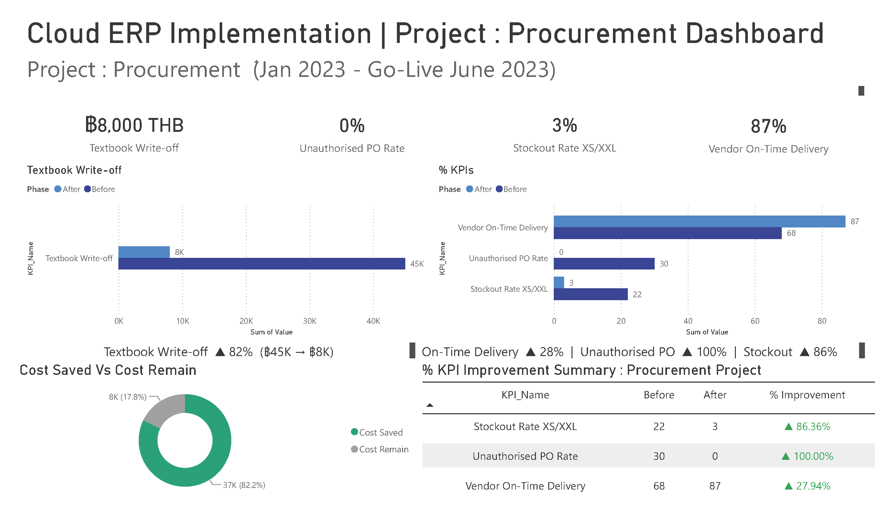

Full P2P implementation on XeerSoft Cloud ERP as sole Implementation Consultant — gathered procurement requirements, configured master data for 180+ materials and 10+ vendors, designed 2-level approval workflow, and applied statistical modelling to solve chronic stockouts at Newton Sixth Form School.

Newton Sixth Form managed procurement for school uniforms (~180 SKUs) and textbooks (~40 titles) without a structured system — purchase requests were uncontrolled, approval was informal, and uniform stockouts occurred every intake season due to intuition-based ordering.
· Chronic XS/XXL stockout rate at 22% of intake seasons — root cause: planning parameters set by intuition, not statistical models
· Textbook over-ordering at 8–12% buffer above enrolment → ฿28–45K annual write-off from obsolete editions
· No approval threshold — any staff could raise unlimited purchase requests
I joined as sole Implementation Consultant. The challenge wasn't simply to configure an ERP module — it was to diagnose why the existing process was failing, design a system that solved root causes, and ensure adoption across 15+ procurement staff.
I split the work into three streams running in parallel: (1) Master Data Configuration for 180+ materials and 10+ vendors on XeerSoft, (2) Statistical Modelling to calculate scientifically-grounded reorder parameters, and (3) Workflow Design for 2-level purchase approval authorization.
The full P2P process as configured in XeerSoft — driven by module screens and menu navigation (no transaction codes). Each step maps to a module → function path in the live system.
| # | Process Step | XeerSoft Module → Function |
|---|---|---|
| 1 | Create Purchase Requisition | Procurement › Purchase Requisition › Create |
| 2 | PR Approval — 2-level | Workflow Authorization › Release Rule |
| 3 | Create Purchase Order | Procurement › Purchase Order › Create |
| 4 | Goods Receipt | Inventory › Goods Receipt |
| 5 | Invoice Verification — 3-way match | Procurement › Invoice Matching |
| 6 | Stock Monitoring | Inventory › Stock Balance / Reorder Report |
| 7 | Vendor Evaluation | Procurement › Vendor Scorecard |
| 8 | Master Data | Inventory › Item & Vendor Master |
The business logic I authored in the Functional Specification Document (FSD) and handed to the XeerSoft development team to implement.
An interactive simulation that runs the FSD logic above directly in your browser — it reproduces the specified behaviour I designed, not the proprietary XeerSoft UI.
Purchase Requisition
Routing Decision · FSD-P1-01
Stock vs statistical target · FSD-P1-03
Drag on-hand to watch status recompute — STOCKOUT if below safety stock, OVERSTOCK if above target × 1.2.
| SKU | On-hand | Safety | Target | Status |
|---|
On XeerSoft Cloud ERP I worked as Functional Consultant / Business Analyst — owning requirements, configuration, FSD authoring, UAT and defect management. The custom logic below was implemented by XeerSoft’s in-house development team against my specifications.
The pseudocode shown is the specified expected behaviour (my FSD deliverable) — not vendor source code, and deliberately platform-neutral so it reads the same to a XeerSoft or an SAP reviewer.
Rather than guess safety stock values, I applied three different statistical models based on SKU demand patterns — and entered the calculated parameters directly into XeerSoft inventory planning fields.
· Poisson Distribution for low-volume SKUs (λ < 25) — XS and XXL uniform sizes at 97% service level
· Normal Z-score for mid-range sizes (S–L) with stable demand patterns
· Modified EOQ with Edition-Risk Penalty for textbooks subject to edition obsolescence
Configured the full master data foundation for the P2P cycle from scratch on XeerSoft.
The biggest learning was that ERP success is 30% configuration and 70% adoption. The statistical models were rigorous, the workflow was clean — but the real win came from training procurement staff to trust system-driven reorder points instead of intuition. Weekly review sessions for the first 3 months post Go-Live were critical to making the change stick.